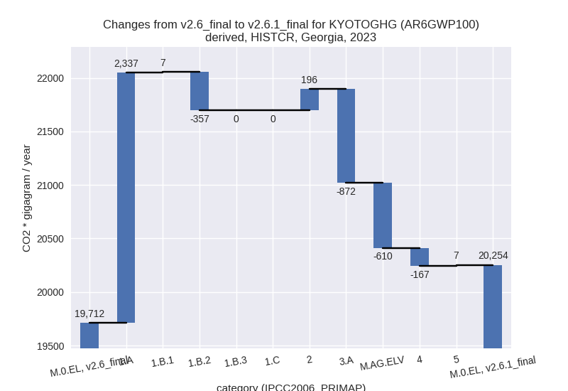
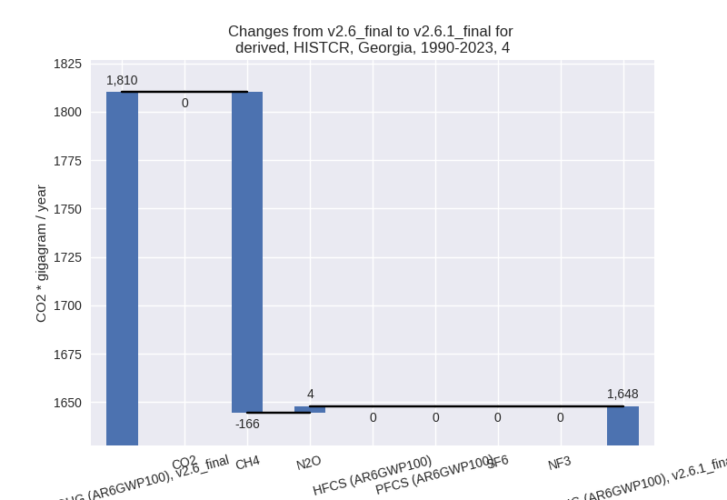

Changes in PRIMAP-hist v2.6.1_final compared to v2.6_final for Georgia
2025-03-19
Johannes Gütschow
Change analysis for Georgia for PRIMAP-hist v2.6.1_final compared to v2.6_final
Overview over emissions by sector and gas
The following figures show the aggregate national total emissions excluding LULUCF AR6GWP100 for the country reported priority scenario. The dotted linesshow the v2.6_final data.
The following figures show the aggregate national total emissions excluding LULUCF AR6GWP100 for the third party priority scenario. The dotted linesshow the v2.6_final data.
Overview over changes
In the country reported priority scenario we have the following changes for aggregate Kyoto GHG and national total emissions excluding LULUCF (M.0.EL):
- Emissions in 2023 have changed by 2.8%% (542.07 Gg CO2 / year)
- Emissions in 1990-2023 have changed by -9.5%% (-1822.87 Gg CO2 / year)
In the third party priority scenario we have the following changes for aggregate Kyoto GHG and national total emissions excluding LULUCF (M.0.EL):
- Emissions in 2023 have changed by 0.0%% (7.82 Gg CO2 / year)
- Emissions in 1990-2023 have changed by 1.1%% (151.29 Gg CO2 / year)
Most important changes per scenario and time frame
In the country reported priority scenario the following sector-gas combinations have the highest absolute impact on national total KyotoGHG (AR6GWP100) emissions in 2023 (top 5):
- 1: 1.A, CO2 with 2287.42 Gg CO2 / year (26.8%)
- 2: 2, HFCS (AR6GWP100) with 597.39 Gg CO2 / year (43306.8%)
- 3: 3.A, CH4 with -583.01 Gg CO2 / year (-24.8%)
- 4: 2, N2O with -537.44 Gg CO2 / year (-68.1%)
- 5: M.AG.ELV, N2O with -497.02 Gg CO2 / year (-48.9%)
In the country reported priority scenario the following sector-gas combinations have the highest absolute impact on national total KyotoGHG (AR6GWP100) emissions in 1990-2023 (top 5):
- 1: M.AG.ELV, N2O with -591.87 Gg CO2 / year (-49.8%)
- 2: 2, CO2 with -441.33 Gg CO2 / year (-28.7%)
- 3: 2, N2O with -407.72 Gg CO2 / year (-70.8%)
- 4: 1.A, CO2 with 297.30 Gg CO2 / year (3.6%)
- 5: 3.A, CH4 with -221.10 Gg CO2 / year (-9.9%)
In the third party priority scenario the following sector-gas combinations have the highest absolute impact on national total KyotoGHG (AR6GWP100) emissions in 2023 (top 5):
- 1: 2, CO2 with -298.25 Gg CO2 / year (-15.8%)
- 2: 1.B.2, CO2 with 140.23 Gg CO2 / year (4044.8%)
- 3: M.AG.ELV, N2O with 102.29 Gg CO2 / year (14.2%)
- 4: 4, CH4 with -42.79 Gg CO2 / year (-2.6%)
- 5: 1.A, CH4 with 37.24 Gg CO2 / year (45.1%)
In the third party priority scenario the following sector-gas combinations have the highest absolute impact on national total KyotoGHG (AR6GWP100) emissions in 1990-2023 (top 5):
- 1: 1.B.2, CO2 with 180.82 Gg CO2 / year (7379.6%)
- 2: 4, CH4 with -54.15 Gg CO2 / year (-3.3%)
- 3: 1.B.1, CH4 with 28.18 Gg CO2 / year (379.1%)
- 4: 2, CO2 with -14.34 Gg CO2 / year (-1.4%)
- 5: M.AG.ELV, N2O with 9.96 Gg CO2 / year (1.1%)
Notes on data changes
Here we list notes explaining important emissions changes for the country.
- CRT data from BTR1 has been included. It covers 1990-2022 and
replaces and extends BUR1 and DI data.
- 2023 emissions are higher than in PRIMAP-hist v2.6 because energy
CO2 emissions show a 27% increase due to an emission increase after 2020
in the CRT data. HFCs are also much higher in 2023 than in the older
country reported data.
- Agricultural emissions and N2O in 2.B are lower for all years in CRT compared to older data leading to lower cumulative emissions and also impacting 2023 emissions.
- pre-1990 emissions are lower, because the 1990 value for CO2 in 2.C has been corrected downward in the CRT data compared to older country reported data.
- 2023 emissions are higher than in PRIMAP-hist v2.6 because energy
CO2 emissions show a 27% increase due to an emission increase after 2020
in the CRT data. HFCs are also much higher in 2023 than in the older
country reported data.
- Changes in the TP time-series are much smaller and due to updated EDGAR and FAO data.
Changes by sector and gas
For each scenario and time frame the changes are displayed for all individual sectors and all individual gases. In the sector plot we use aggregate Kyoto GHGs in AR6GWP100. In the gas plot we usenational total emissions without LULUCF.
country reported scenario
2023

1990-2023
third party scenario
2023

1990-2023
Detailed changes for the scenarios:
country reported scenario (HISTCR):
Most important changes per time frame
For 2023 the following sector-gas combinations have the highest absolute impact on national total KyotoGHG (AR6GWP100) emissions in 2023 (top 5):
- 1: 1.A, CO2 with 2287.42 Gg CO2 / year (26.8%)
- 2: 2, HFCS (AR6GWP100) with 597.39 Gg CO2 / year (43306.8%)
- 3: 3.A, CH4 with -583.01 Gg CO2 / year (-24.8%)
- 4: 2, N2O with -537.44 Gg CO2 / year (-68.1%)
- 5: M.AG.ELV, N2O with -497.02 Gg CO2 / year (-48.9%)
For 1990-2023 the following sector-gas combinations have the highest absolute impact on national total KyotoGHG (AR6GWP100) emissions in 1990-2023 (top 5):
- 1: M.AG.ELV, N2O with -591.87 Gg CO2 / year (-49.8%)
- 2: 2, CO2 with -441.33 Gg CO2 / year (-28.7%)
- 3: 2, N2O with -407.72 Gg CO2 / year (-70.8%)
- 4: 1.A, CO2 with 297.30 Gg CO2 / year (3.6%)
- 5: 3.A, CH4 with -221.10 Gg CO2 / year (-9.9%)
Changes in the main sectors for aggregate KyotoGHG (AR6GWP100) are
- 1: Total sectoral emissions in 2022 are 13212.72 Gg
CO2 / year which is 65.2% of M.0.EL emissions. 2023 Emissions have
changed by 17.8% (1987.44 Gg CO2 /
year). 1990-2023 Emissions have changed by 2.4% (275.13 Gg CO2 / year). For 2023 the
changes per gas
are:
For 1990-2023 the changes per gas are:
The changes come from the following subsectors:- 1.A: Total sectoral emissions in 2022 are 11149.69
Gg CO2 / year which is 84.4% of category 1 emissions. 2023 Emissions
have changed by 26.9% (2337.34 Gg
CO2 / year). 1990-2023 Emissions have changed by 3.7% (312.40 Gg CO2 / year). For 2023 the
changes per gas
are:
For 1990-2023 the changes per gas are:
There is no subsector information available in PRIMAP-hist. - 1.B.1: Total sectoral emissions in 2022 are 97.88
Gg CO2 / year which is 0.7% of category 1 emissions. 2023 Emissions have
changed by 7.6% (6.66 Gg CO2 /
year). 1990-2023 Emissions have changed by 14.6% (16.65 Gg CO2 / year). For 2023 the
changes per gas
are:
For 1990-2023 the changes per gas are:
There is no subsector information available in PRIMAP-hist. - 1.B.2: Total sectoral emissions in 2022 are 1965.15
Gg CO2 / year which is 14.9% of category 1 emissions. 2023 Emissions
have changed by -15.0% (-356.56 Gg
CO2 / year). 1990-2023 Emissions have changed by -2.0% (-53.92 Gg CO2 / year). For 2023 the
changes per gas
are:
There is no subsector information available in PRIMAP-hist.
- 1.A: Total sectoral emissions in 2022 are 11149.69
Gg CO2 / year which is 84.4% of category 1 emissions. 2023 Emissions
have changed by 26.9% (2337.34 Gg
CO2 / year). 1990-2023 Emissions have changed by 3.7% (312.40 Gg CO2 / year). For 2023 the
changes per gas
are:
- 2: Total sectoral emissions in 2022 are 2680.42 Gg
CO2 / year which is 13.2% of M.0.EL emissions. 2023 Emissions have
changed by 7.8% (196.23 Gg CO2 /
year). 1990-2023 Emissions have changed by -38.5% (-865.43 Gg CO2 / year). For 2023
the changes per gas
are:
For 1990-2023 the changes per gas are: - M.AG: Total sectoral emissions in 2022 are 2322.79
Gg CO2 / year which is 11.5% of M.0.EL emissions. 2023 Emissions have
changed by -38.8% (-1481.78 Gg CO2 /
year). 1990-2023 Emissions have changed by -28.5% (-1070.55 Gg CO2 / year). For 2023
the changes per gas
are:
For 1990-2023 the changes per gas are:
The changes come from the following subsectors:- 3.A: Total sectoral emissions in 2022 are 1811.01
Gg CO2 / year which is 78.0% of category M.AG emissions. 2023 Emissions
have changed by -32.5% (-871.50 Gg
CO2 / year). 1990-2023 Emissions have changed by -17.3% (-434.56 Gg CO2 / year). For 2023
the changes per gas
are:
For 1990-2023 the changes per gas are:
There is no subsector information available in PRIMAP-hist. - M.AG.ELV: Total sectoral emissions in 2022 are
511.78 Gg CO2 / year which is 22.0% of category M.AG emissions. 2023
Emissions have changed by -53.7%
(-610.27 Gg CO2 / year). 1990-2023 Emissions have changed by -51.5% (-635.99 Gg CO2 / year). For 2023
the changes per gas
are:
For 1990-2023 the changes per gas are:
There is no subsector information available in PRIMAP-hist.
- 3.A: Total sectoral emissions in 2022 are 1811.01
Gg CO2 / year which is 78.0% of category M.AG emissions. 2023 Emissions
have changed by -32.5% (-871.50 Gg
CO2 / year). 1990-2023 Emissions have changed by -17.3% (-434.56 Gg CO2 / year). For 2023
the changes per gas
are:
- 4: Total sectoral emissions in 2022 are 1989.32 Gg
CO2 / year which is 9.8% of M.0.EL emissions. 2023 Emissions have
changed by -7.7% (-166.72 Gg CO2 /
year). 1990-2023 Emissions have changed by -9.0% (-162.25 Gg CO2 / year). For 2023
the changes per gas
are:
For 1990-2023 the changes per gas are:
 - 5: Total sectoral emissions in 2022 are 59.71 Gg
CO2 / year which is 0.3% of M.0.EL emissions. 2023 Emissions have
changed by 12.9% (6.90 Gg CO2 /
year). 1990-2023 Emissions have changed by 0.4% (0.24 Gg CO2 / year). For 2023 the
changes per gas
are:
third party scenario (HISTTP):
Most important changes per time frame
For 2023 the following sector-gas combinations have the highest absolute impact on national total KyotoGHG (AR6GWP100) emissions in 2023 (top 5):
- 1: 2, CO2 with -298.25 Gg CO2 / year (-15.8%)
- 2: 1.B.2, CO2 with 140.23 Gg CO2 / year (4044.8%)
- 3: M.AG.ELV, N2O with 102.29 Gg CO2 / year (14.2%)
- 4: 4, CH4 with -42.79 Gg CO2 / year (-2.6%)
- 5: 1.A, CH4 with 37.24 Gg CO2 / year (45.1%)
For 1990-2023 the following sector-gas combinations have the highest absolute impact on national total KyotoGHG (AR6GWP100) emissions in 1990-2023 (top 5):
- 1: 1.B.2, CO2 with 180.82 Gg CO2 / year (7379.6%)
- 2: 4, CH4 with -54.15 Gg CO2 / year (-3.3%)
- 3: 1.B.1, CH4 with 28.18 Gg CO2 / year (379.1%)
- 4: 2, CO2 with -14.34 Gg CO2 / year (-1.4%)
- 5: M.AG.ELV, N2O with 9.96 Gg CO2 / year (1.1%)
Changes in the main sectors for aggregate KyotoGHG (AR6GWP100) are
- 1: Total sectoral emissions in 2022 are 9405.51 Gg
CO2 / year which is 58.2% of M.0.EL emissions. 2023 Emissions have
changed by 2.4% (215.61 Gg CO2 /
year). 1990-2023 Emissions have changed by 2.7% (206.21 Gg CO2 / year). For 2023 the
changes per gas
are:
For 1990-2023 the changes per gas are:
The changes come from the following subsectors:- 1.A: Total sectoral emissions in 2022 are 9127.98 Gg CO2 / year which is 97.0% of category 1 emissions. 2023 Emissions have changed by 0.6% (51.03 Gg CO2 / year). 1990-2023 Emissions have changed by 0.0% (1.60 Gg CO2 / year).
- 1.B.1: Total sectoral emissions in 2022 are 34.86
Gg CO2 / year which is 0.4% of category 1 emissions. 2023 Emissions have
changed by 402.7% (27.11 Gg CO2 /
year). 1990-2023 Emissions have changed by 374.8% (28.17 Gg CO2 / year). For 2023 the
changes per gas
are:
For 1990-2023 the changes per gas are:
There is no subsector information available in PRIMAP-hist. - 1.B.2: Total sectoral emissions in 2022 are 242.67
Gg CO2 / year which is 2.6% of category 1 emissions. 2023 Emissions have
changed by 152.9% (137.47 Gg CO2 /
year). 1990-2023 Emissions have changed by 210.1% (176.43 Gg CO2 / year). For 2023
the changes per gas
are:
For 1990-2023 the changes per gas are:
There is no subsector information available in PRIMAP-hist.
- 2: Total sectoral emissions in 2022 are 2873.63 Gg
CO2 / year which is 17.8% of M.0.EL emissions. 2023 Emissions have
changed by -8.6% (-277.01 Gg CO2 /
year). 1990-2023 Emissions have changed by -0.8% (-16.40 Gg CO2 / year). For 2023 the
changes per gas
are:
- M.AG: Total sectoral emissions in 2022 are 2156.71
Gg CO2 / year which is 13.3% of M.0.EL emissions. 2023 Emissions have
changed by 4.9% (102.32 Gg CO2 /
year). 1990-2023 Emissions have changed by 0.6% (14.64 Gg CO2 / year). For 2023 the
changes per gas
are:
The changes come from the following subsectors:- 3.A: Total sectoral emissions in 2022 are 1260.28
Gg CO2 / year which is 58.4% of category M.AG emissions. 2023 Emissions
have changed by 2.2% (26.86 Gg CO2 /
year). 1990-2023 Emissions have changed by 0.1% (1.49 Gg CO2 / year). For 2023 the
changes per gas
are:
There is no subsector information available in PRIMAP-hist. - M.AG.ELV: Total sectoral emissions in 2022 are
896.43 Gg CO2 / year which is 41.6% of category M.AG emissions. 2023
Emissions have changed by 8.9%
(75.46 Gg CO2 / year). 1990-2023 Emissions have changed by 1.3% (13.15 Gg CO2 / year). For 2023 the
changes per gas
are:
There is no subsector information available in PRIMAP-hist.
- 3.A: Total sectoral emissions in 2022 are 1260.28
Gg CO2 / year which is 58.4% of category M.AG emissions. 2023 Emissions
have changed by 2.2% (26.86 Gg CO2 /
year). 1990-2023 Emissions have changed by 0.1% (1.49 Gg CO2 / year). For 2023 the
changes per gas
are:
- 4: Total sectoral emissions in 2022 are 1668.81 Gg
CO2 / year which is 10.3% of M.0.EL emissions. 2023 Emissions have
changed by -2.3% (-40.00 Gg CO2 /
year). 1990-2023 Emissions have changed by -3.1% (-53.40 Gg CO2 / year). For 2023 the
changes per gas
are:
For 1990-2023 the changes per gas are: - 5: Total sectoral emissions in 2022 are 59.71 Gg
CO2 / year which is 0.4% of M.0.EL emissions. 2023 Emissions have
changed by 12.9% (6.90 Gg CO2 /
year). 1990-2023 Emissions have changed by 0.4% (0.24 Gg CO2 / year). For 2023 the
changes per gas
are: